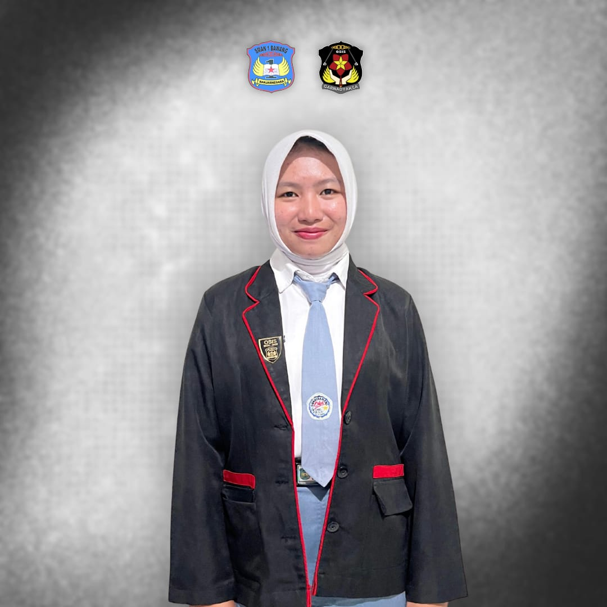
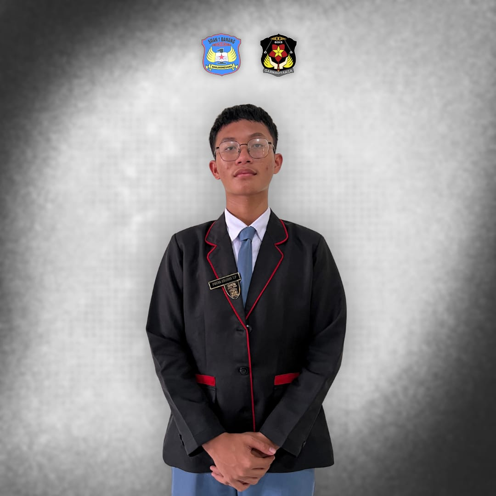
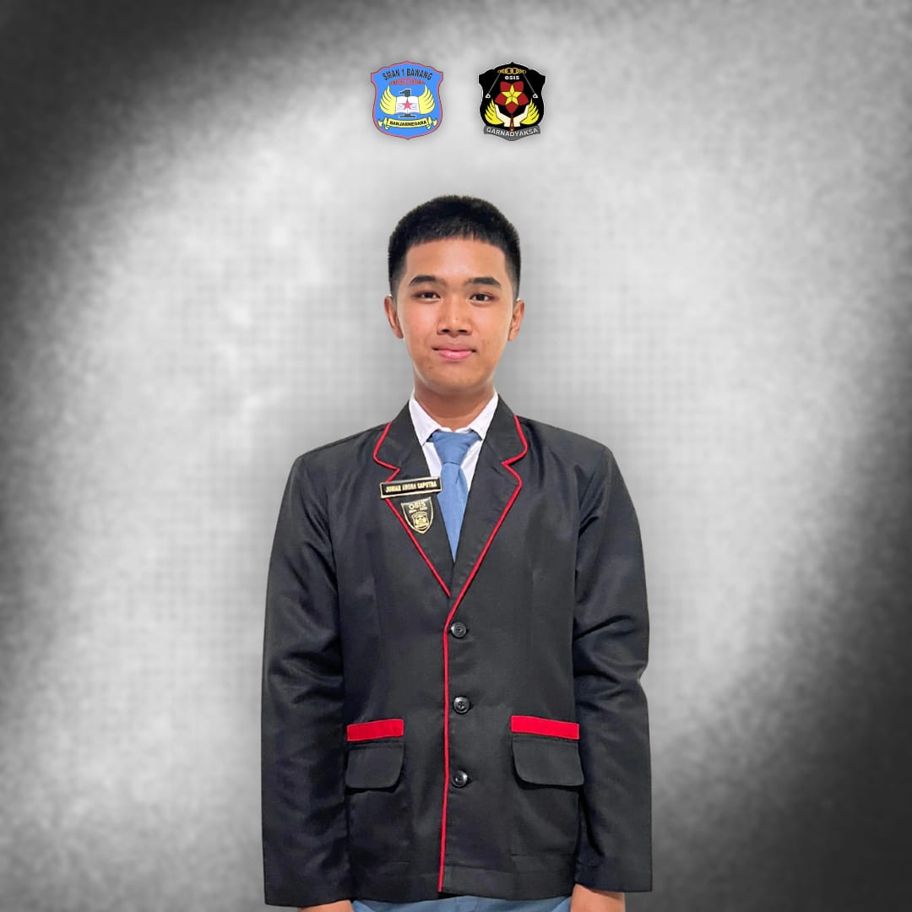
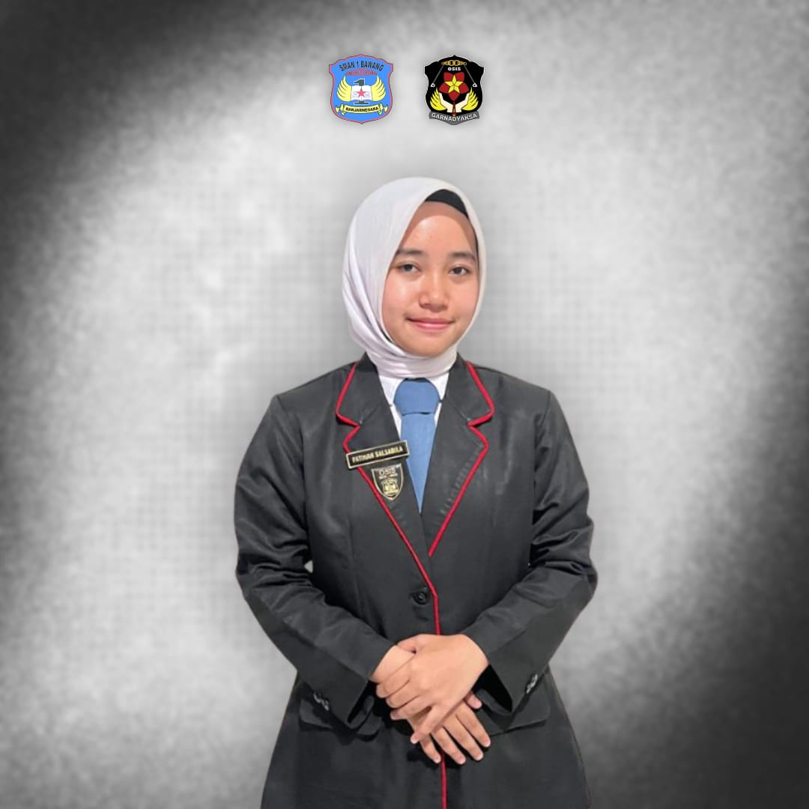
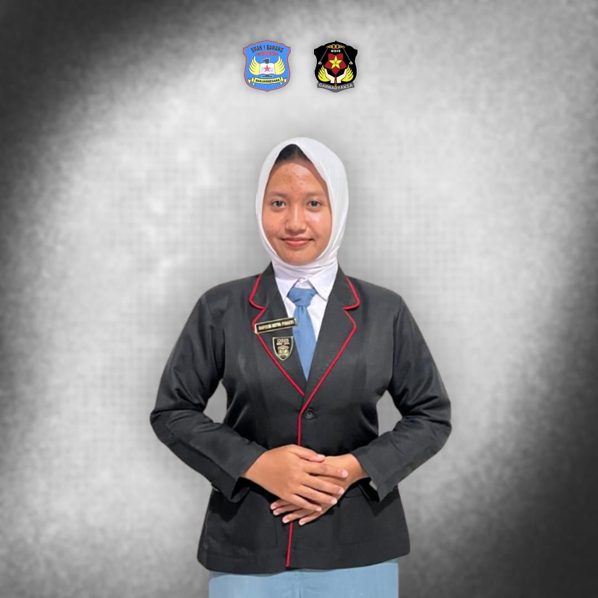

GARNADYAKSA





Sekbid 10: Sastra dan Komunikasi Bahasa Inggris
seksi bidang ini berfokus untuk meningkatkan keterampilan komunikasi, kepercayaan diri, apresiasi karya sastra, dan kemampuan bahasa asing melalui kegiatan pidato 3 bahasa, pembuatan komik, story telling dll.